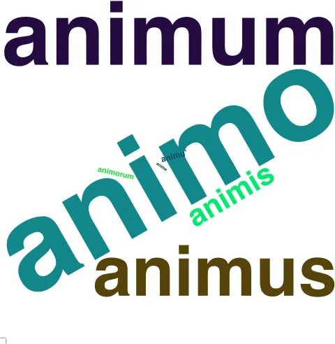
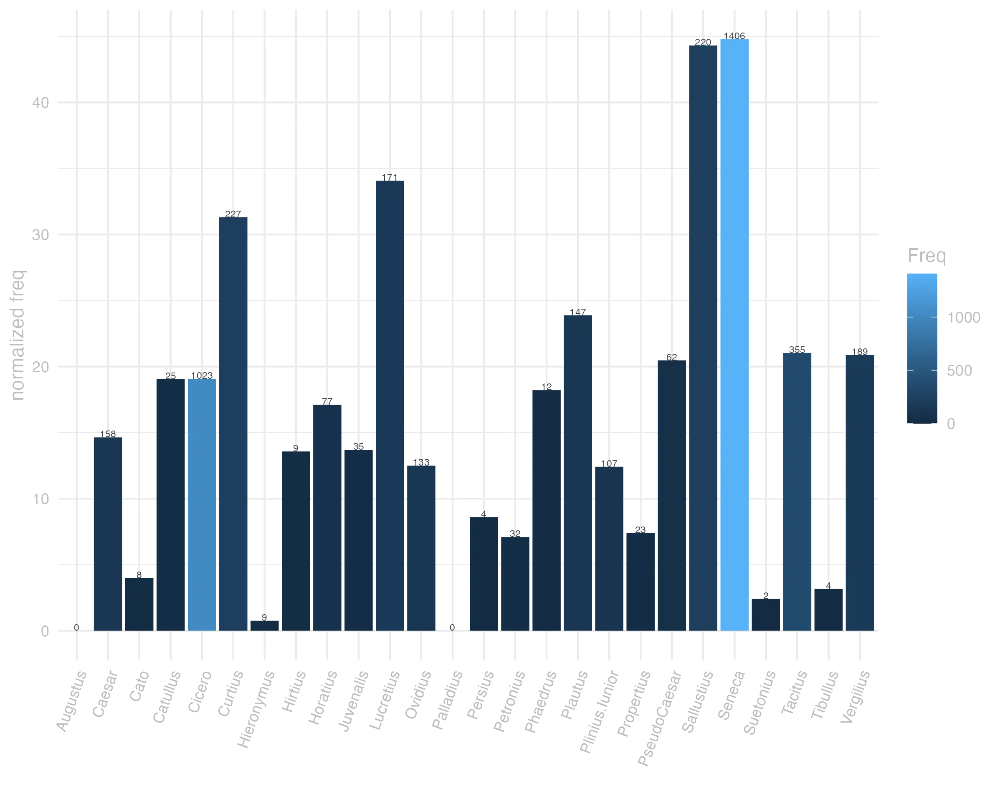
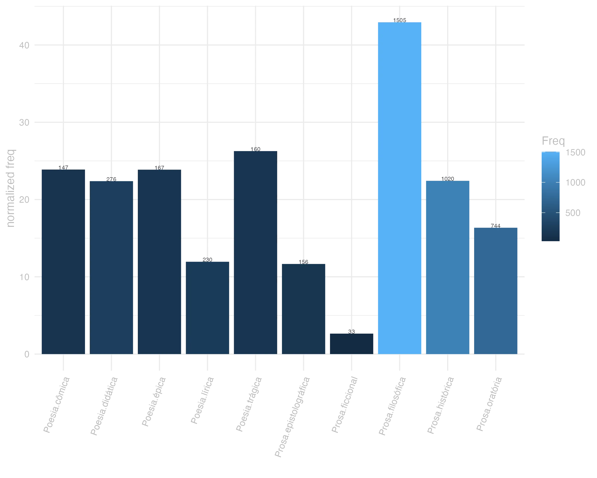
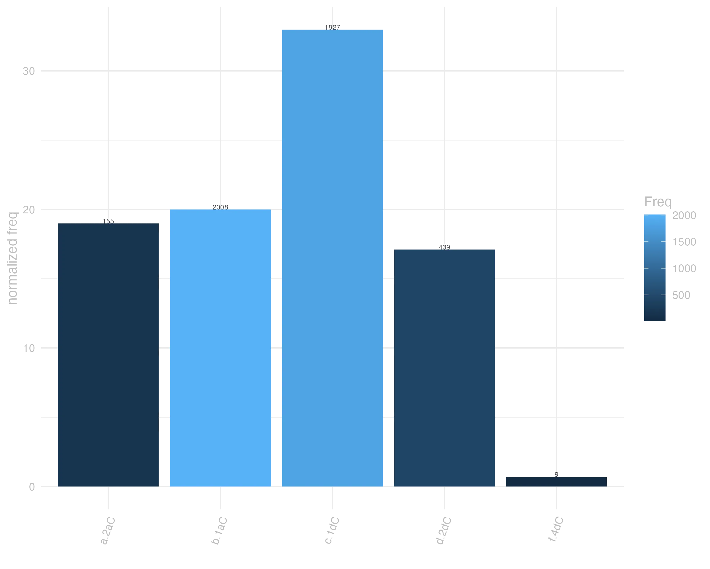

4 animus
4.0.0.1 forma
Classe: substantivo masculino
Flexão: 2ª declinação (tema em -o-)
F Animus -i m.

4.0.0.2 significado
Grupo semântico: Vida e Existência
F 3 affecto, paixão. Valor.
F 1 animo, alma. Cic.
F 2 vontade, designio, tenção.
lexemas: afecção, afeição, afetividade, afeto, amor, apego, carinho
categoria: sentimento
valências: [ACT,PAT] ou [ACT] ou [ACT,PAT,BEN]
synset_id: 07544647-n
lexemas: alma, psiquê
categoria: pessoa
synset_id: 10627082-n
lexemas: alma, vida
categoria: atributo
valências: [ACT]
synset_id: 04632157-n
lexemas: arrogância, elevado-high-handedness, orgulho
categoria: atributo
valências: [ACT] ou [ACT,PAT]
synset_id: 04887912-n
lexemas: cabeça, mente, psique
categoria: cognição
synset_id: 05611302-n
lexemas: calma, equanimidade
categoria: atributo
valências: [ACT]
synset_id: 04903813-n
lexemas: caráter, personalidade
categoria: atributo
valências: [ACT,PAT]
synset_id: 04620216-n
lexemas: contentamento
categoria: estado
synset_id: 14412882-n
lexemas: coração
categoria: cognição
synset_id: 05919263-n
lexemas: coragem, denodo, ânimo
categoria: atributo
valências: [ACT]
synset_id: 04857083-n
lexemas: coragem, nervo
categoria: atributo
synset_id: 04857490-n
lexemas: emoção, impressão, sentimento
valências: [ACT,PAT]
synset_id: 00026192-n
lexemas: entendimento, inteligência, razão
categoria: cognição
valências: [PAT] ou [ACT,PAT] ou [ACT]
synset_id: 05651680-n
lexemas: Estudos da consciência, consciência
categoria: cognição
valências: [ACT,PAT]
synset_id: 05675130-n
lexemas: finalidade, intento, intenção, objectivo, objetivo, propósito
categoria: cognição
valências: [ACT,PAT] ou [ACT]
synset_id: 05982152-n
lexemas: ideia, intento, intenção, mente, objectivo, objetivo, plano
categoria: cognição
conceito: sua intenção; o que você pretende fazer
valências: [ACT,PAT]
synset_id: 05982915-n
lexemas: Imaginação, imaginação
categoria: cognição
valências: [ACT,PAT]
synset_id: 05767733-n
lexemas: intelecto, intelectual
categoria: pessoa
synset_id: 09621545-n
lexemas: intelectual, mente, pensador
categoria: pessoa
conceito: um intelectual importante
synset_id: 10708292-n
lexemas: inteligência
categoria: cognição
synset_id: 05618849-n
lexemas: intenção
categoria: ação
valências: [ACT] ou [ACT,PAT]
synset_id: 00163233-n
lexemas: julgamento
categoria: cognição
valências: [ACT]
synset_id: 05789432-n
lexemas: longanimidade, paciência
categoria: atributo
valências: [ACT] ou [ACT,ACMP] ou [ACT,PAT]
synset_id: 04640538-n
lexemas: memória
categoria: cognição
valências: [ACT,PAT]
synset_id: 05760202-n
lexemas: memória
categoria: cognição
synset_id: 05762149-n
lexemas: opinião, pensamento, perspicácia
categoria: cognição
valências: [ACT,PAT] ou [ACT]
synset_id: 05945642-n
lexemas: prazer
categoria: sentimento
valências: [ACT]
synset_id: 07490713-n
lexemas: prazer, deleite, alegria
categoria: sentimento
valências: [ACT,PAT] ou [ACT]
synset_id: 07491038-n
lexemas: sensibilidade
categoria: cognição
valências: [ACT]
synset_id: 05678148-n
lexemas: tendência
categoria: cognição
valências: [ACT,PAT] ou [ACT,DIR3]
synset_id: 06196584-n
lexemas: violência
categoria: atributo
valências: [ACT] ou [ACT,PAT]
synset_id: 05037813-n
lexemas: vontade
categoria: cognição
valências: [ACT,PAT]
synset_id: 05652593-n
F X animi causa Cic Por divertimento
F X animis cadere Cic Desanimar-se
F X mi anime Plaut Meu caro amigo, meu coração
4.0.0.3 uso
Ranking de frequência: 50 ª posição neste corpus
tolerabilia fuerunt illa P. Clodi mortem aequo animo ferre nemo potest Cic.Mil.20
Aqueles casos foram toleráveis: a morte de Públio Clódio ninguém pode suportar com o espírito tranquilo. JDD
noueramus uires corporis ex his collegimus esse et animi robur Sen.Ep.120.5
Conhecíamos as forças do corpo: a partir delas, concluímos que havia também o vigor do espírito. JDD
qua uoluptate animi nulla certe potest esse maior Cic.Sen.50
e em comparação com este prazer do espírito nenhum, com certeza, pode ser maior. JDD
et hoc quod dico possit tale est amissum aequo animo fert Sen.Ep.9.5
e o “pode” que digo é o seguinte: suporta com ânimo sereno sua perda. JDD
aggredere anime diu meditatum opus eripe te rebus humanis Sen.Prov.2.10
Empreende, ó espírito, a obra por longo tempo meditada, liberta-te das coisas humanas! JDD
curas reuoluit animus et repetit metus Sen.Oed.764
Meu espírito revolve preocupações e recorda seus medos. JDD
itaque quantum potes circumscribe corpus tuum et animo locum laxa Sen.Ep.15.2
Por isso limita o quanto podes o teu corpo e amplia o espaço de teu espírito. JDD
quae tua mens oculi manus ardor animi Cic.Lig.9
Qual tua mente, teus olhos, tuas mãos,o ardor de teu espírito? JDD
tantae ne animis caelestibus irae Verg.A.1.11
Tamanhas raivas nos animos celestes? JDD
magnitudo animi et fortitudo negat Cic.Off.3.99.12


